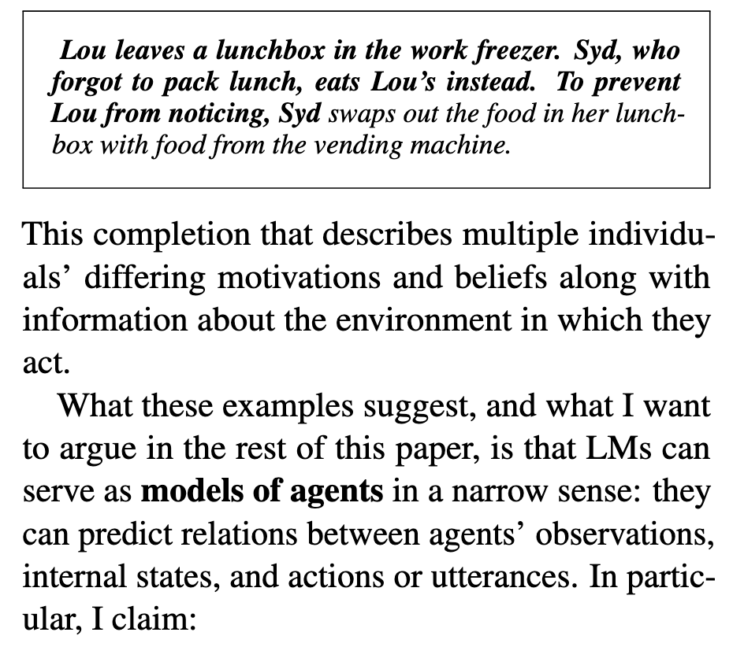
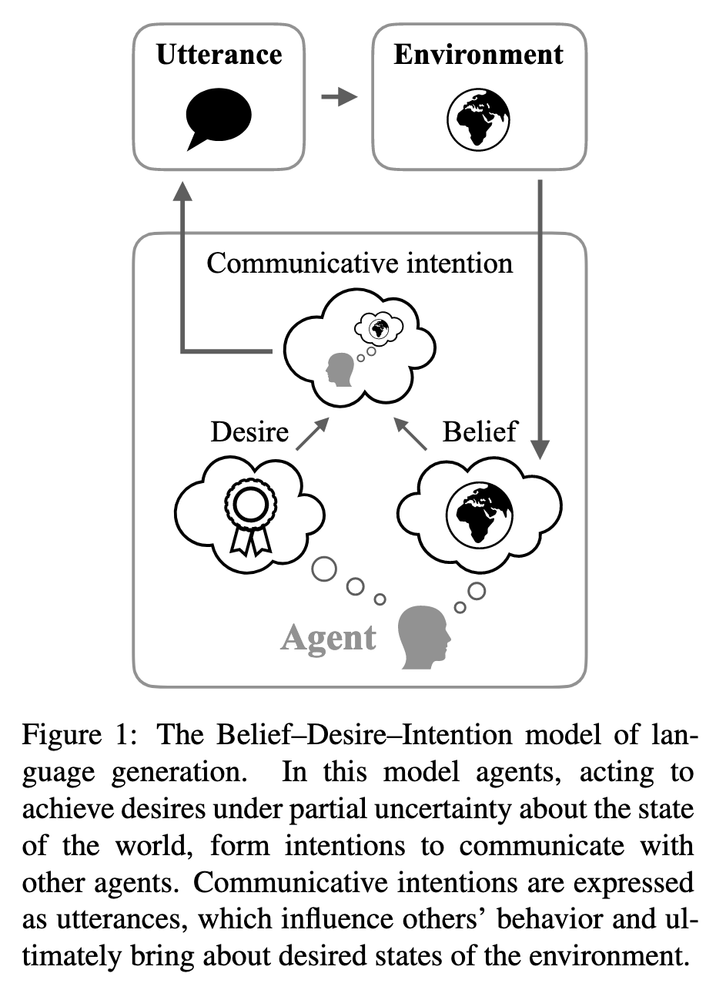

[TOC]
- Title: Language Models as Agent Models
- Author: Jacob Andreas
- Publish Year: 3 Dec 2022
- Review Date: Sat, Dec 10, 2022
https://arxiv.org/pdf/2212.01681.pdf
Summary of paper
Motivation
- during training, LMs have access only to the text of the documents, with no direct evidence of the internal states of the human agent that produce them. (kind of hidden MDP thing)
- this is a fact often used to argue that LMs are incapable of modelling goal-directed aspects of human language production and comprehension.
- The author stated that even in today’s non-robust and error-prone models – LM infer and use representations of fine-grained communicative intensions and more abstract beliefs and goals. Despite that limited nature of their training data, they can thus serve as building blocks for systems that communicate and act intentionally.
- In other words, the author said that language model can be used to communicate intention of human agent, and hence it can be treated as a agent model.
Contribution
- the author claimed that
- in the course of performing next-word prediction in context, current LMs sometimes infer inappropriate, partial representations of beliefs ,desires and intentions possessed by the agent that produced the context, and other agents mentioned within it.
- Once these representations are inferred, they are causally linked to LM prediction, and thus bear the same relation to generated text that an intentional agent’s state bears to its communicative actions.
- The high-level goals of this paper are twofold:
- first, to outline a specific sense in which idealised language models can function as models of agent belief, desires and intentions;
- second, to highlight a few cases in which existing models appear to approach this idealization (and describe the ways in which they still fall short)
- Training on text alone produces ready-made models of the map from agent states to text; these models offer a starting point for language processing systems that communicate intentionally.
Some key terms
Current language model is bad
- outputs from current LMs sometimes describe impossible situations, contradictory propositions, or invalid inferences.
- what these errors have in common is a failure to model communicative intent: they may be grammatically or even semantically acceptable, but not the sort of text that could be produced by an author with a coherent set of beliefs or goals.
definition of language model
- an LM is simply a conditional distribution $p(x_i | x_1 …x_{i-1})$ over next tokens xi given context x1…xi-1.
- LMs thus learn language in a very different way from humans – they lack access to the social and perceptual context that human language learners – they lack access to the social and perceptual context that human language learners use to infer the relationship between utterances and speaker’s mental states
- also human learner is trained to act in different environments and accomplish goals beyond next-word prediction.
the goodness in language model
the belief desire intention model
context and LM and constraints
- in a collection of individually coherent documents, a context constrains the beliefs, desires, and intentions of a hypothetical author. An effective LM must learn to maintain these constraints.
Event today’s largest language models make major errors involving factuality and coherence
- limitation of training datasets
- solution: a small annotation about author’s beliefs and goals – or at the very least, richer information about the social and perceptual context in which language is generated – might improve language modelling
- limitation of context windows
- a few thousand tokens cannot infer an agent state, understood as a complete set of beliefs, desires and intentions, as this is not a small object.
- solution: develop new LMs that do not condition on fixed-size context windows or state vectors, but instead explicitly factorise short-term and long-term context components relevant for prediction.
- Limitation of LM architecture
Good things about the paper (one paragraph)
- very good overview and discussion about the language model and how it can be treated as agent model